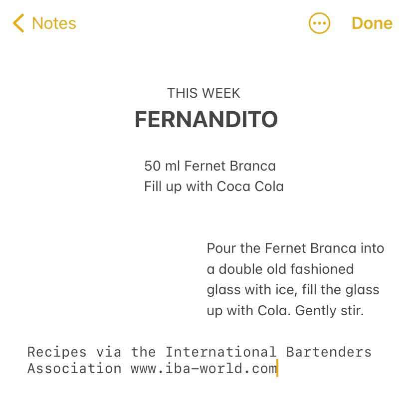

Sloppy Drinks
Podcast
About

Fernandito
Ingredients
Fernet Branca (1.7oz/50ml)
Coca-Cola (top up)
Steps
Pour the Fernet Branca into a double old fashioned glass with ice, fill the glass up with cola.
Gently stir.
Notes
Episode 51 - Fernandito (October 8, 2021)
IBA Fernandito Recipe
Artwork by The Sloppy Boys